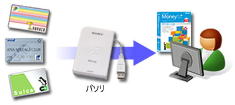

新着情報
- 2010/12/29 : Version 3.0 beta 2 公開。Agurippa電子明細に対応しています。
- 2009/11/1 : Version 2.9 公開しました。Edy 取り込み件数が１件少なかった問題などを修正。
- 2008/10/20 : Microsoft Money 電子明細に対応した iPhone/iPod touch 用お小遣い帳アプリCashFlow のベータテストを開始しました。詳細はこちら。
- 2008/10/20 : CSV 定義を更新しました。
- 2008/5/17 : Version 2.8 公開しました。CSV 取り込みが失敗するバグを修正しました。
- 2008/5/12 : 窓の杜で FeliCa2Money が紹介されました。記事はこちら。
- 2008/4/20 : Version 2.7.1 公開しました。バグ(felicalib.dll ロードエラー、一部駅名が正しく表示されない）を修正してあります。
- 2008/4/19 : Version 2.7 公開しました。Windows x64 環境に対応しました。
FeliCa2Money とは？
FeliCa2Moneyは、FeliCaポート/パソリを使って Edy や nanaco などの電子マネーの利用明細を読み取り、 電子明細(OFX形式ファイル)に変換するものです。これを使えば、電子マネーの利用明細を ワンタッチで家計簿に記帳できます。
また、CSV ファイルからの取り込みにも対応しています。

電子マネー明細をワンタッチで家計簿に取り込める！
対応家計簿ソフト
Money電子明細(OFXファイル)には多くの家計簿ソフトが対応しています。以下はその一部です。
読み取り可能電子マネー
FeliCa2Money は、以下の電子マネーを読み取ることができます。
対応CSVフォーマット
CSVファイルフォーマットは以下のものに対応しています(徐々に増やしていきます）。CSV変換ルールを作れば、対応CSVフォーマットはご自分で増やすことができます。
- OFX Converter 互換
- 住信SBIネット銀行
- JALカード
- イーバンク
Legal notice
本ソフトウェアは、いくつかの種類の電子マネーを読み込むことができますが、この機能はこれら電子マネーの発行者から公式に認められたものではありません。なお、本ソフトウェアは、これら電子マネーの発行事業者およびその事業といかなる関係もありません。
本ソフトウェアの動作や記載に関しての正確性に関しては一切の保証をいたしません。At your own risk でお使い下さい。
- 「FeliCa」「PaSoRi」はソニー株式会社の登録商標です。
- 「Edy」は、ビットワレット株式会社が管理するプリペイド型電子マネーサービスのブランドです。
- 「nanaco」は株式会社アイワイ・カード・サービスの登録商標です。
- 「Suica」はJR東日本の登録商標です。
- 「ICOCA」はJR西日本の登録商標です。
- 「PASMO」は株式会社パスモの登録商標です。
- 「PiTaPa」は、株式会社スルッとKANSAIの登録商標です。
- 「TOICA」は東海旅客鉄道株式会社の登録商標です。
- 「Agurippa」はエヌ・ティ・ティ・ビズリンク株式会社によって運営されています。
- その他、記載されている会社名および商品・サービス名は、各社の登録商標または商標です。